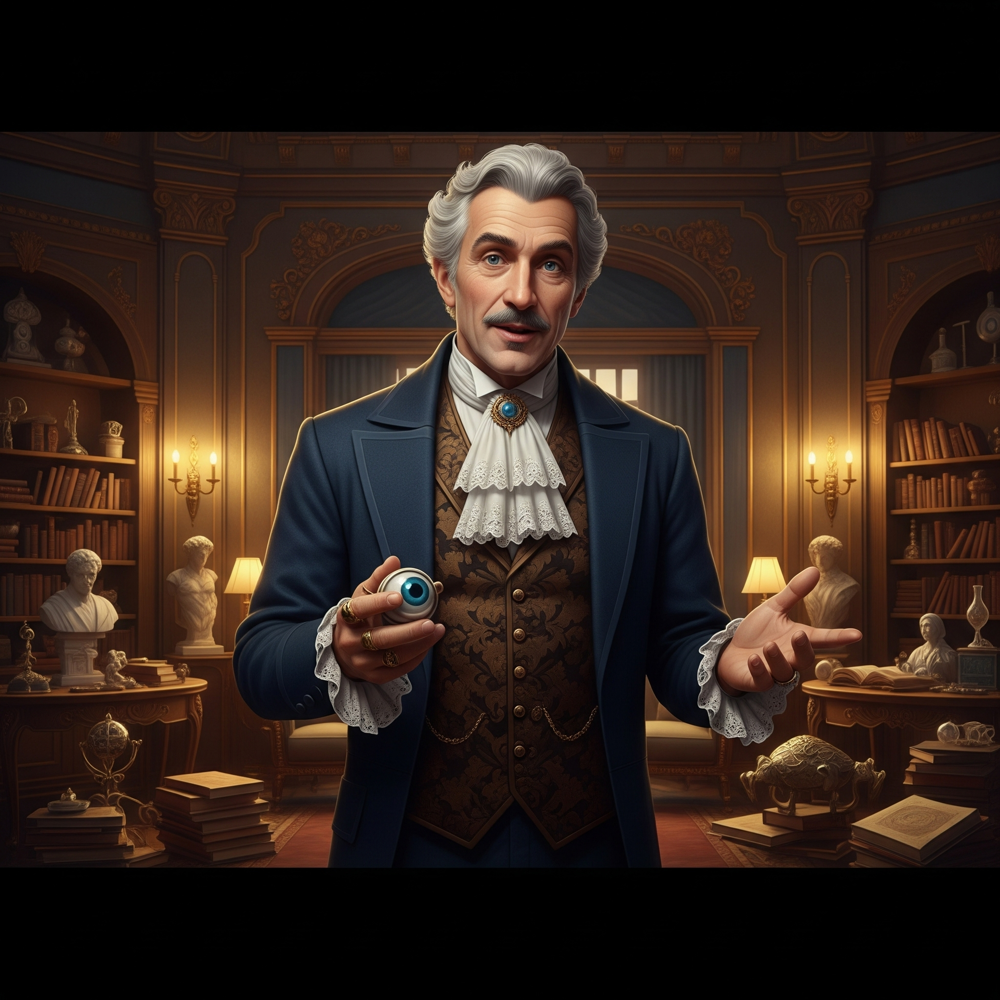

Voer jullie teamnaam in en start het mysterie! Gebruik op elke telefoon die wordt gebruikt binnen het team precies dezelfde naam. Vergeet niet om de speluitleg te lezen voordat je van start gaat, of neem even een kijkje op het scorebord om te zien hoe andere teams zijn geëindigd.
Welkom in dit Levend Cluedo / Vossenjacht spel!
Nadat jullie ingelogd zijn krijgen jullie eerst het introductie verhaal te zien. Na deze gelezen te hebben komen jullie op de kaart van het speelgebied, wat is opgedeeld in een aantal kleinere gebieden waar jullie bewoners kunnen 'vinden' die jullie kunnen ondervragen. Deze kaart kan bewogen worden, er kan ingezoomd worden en jullie kunnen de eigen locatie zien door op de 'GPS'knop te drukken. Door op een van de kleinere gebieden te klikken krijgen jullie een raadsel voor de exacte locatie van deze bewoner. Loop naar deze locatie en klik dan op de 'Check' knop.
Eenmaal op de juiste locatie zullen jullie eerst een vraag over deze locatie moeten beantwoorden. Klopt het antwoord niet, dan zullen jullie eerst naar een andere locatie moeten en kunnen jullie 10 minuten niet hier terug komen. Klopt het antwoord wel, dan krijgen jullie de monoloog van de bewoner.
Als jullie eenmaal terug zijn op het hoofdscherm heeft een succesvol voltooide locatie een groen kleur gekregen, en kunnen jullie de monoloog nogmaals zien door op deze locatie te klikken. Naast deze manier om de voortgang bij te houden, kunnen jullie ook op het ‘Logboek’ klikken om te zien welke bewoners jullie al langs zijn geweest, en waar andere teams zijn geweest.
Mochten jullie het introductie verhaal nogmaals willen vergelijken met jullie notities, klik dan op de knop met het boekje rechtsboven. Voor een beknopte speluitleg klik op de knop met het vraagteken ernaast. Denken jullie het te weten? Klik dan op de knop met het uitroepteken. Hiermee komen jullie op de pagina voor de ontknoping. Het spel stuurt jullie ook automatisch naar deze pagina na de 2 uur speeltijd, of als jullie alle gebieden langs zijn geweest.
Na het spelen van het spel komen jullie weer terug op de startpagina. Als de spelleiding jullie antwoord op het mysterie heeft beoordeeld, komt jullie team automatisch in het scorebord te staan. De eindscore wordt berekend aan de hand van de volgende som: (locaties bezocht + 4 punten voor juiste dader + beoordeling onderbouweing (0 tot 6 punten))/2. De start locatie heeft ook een raadsel, vraag en belangrijke start informatie die jullie kunnen verzamelen, maar hier kan geen punt mee worden verdiend.
Komen jullie achter de waarheid van het mysterie? En gaat het jullie lukken om beter te scoren dan de andere teams? Veel succes met de Vloek van Vosserwoude!